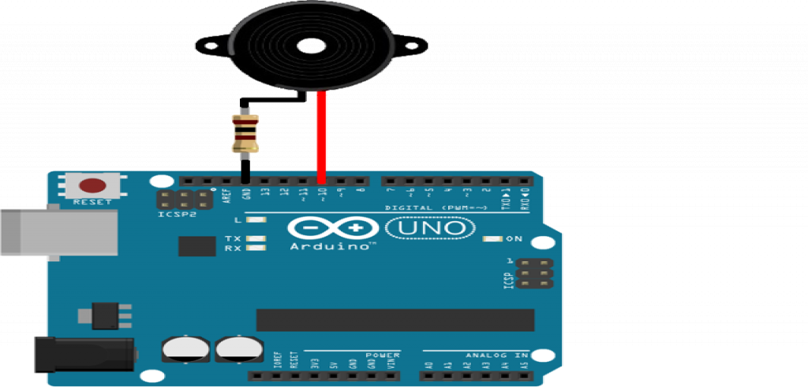

A buzzer or beeper is an audio signaling device,which may be mechanical, electromechanical, or piezoelectric (piezo for short). Typical uses of buzzers and beepers include alarm devices, timers, train and confirmation of user input such as a mouse click or keystroke.
Specifications
Longer pin is the positive pinShorter pin is the negative pin
Rated Voltage:5V
Operating Voltage:4~8 V
Max Rated Current:≤32 mA
Min. Sound Output at 10cm: 85 dB
Resonant Frequency:2300 ±300 Hz
Operating Temperature: -20°C to 45°C
Height(excluding pins):9.16 mm (0.36")
Diameter(excluding pins):11.78 mm (0.46")
Weight:1.6 g (0.057 oz)
Storage Temperature Range: -20 to +70 ℃

| On Sensor | On Raspberry | On Arduino |
|---|---|---|
| Longer Pin | GPIO VCC Pin of 5V | Pin 11 |
| Shorter Pin | GPIO Ground Pin | Ground (GND) |
It can be worked with
Working of push button with Arduino Uno

//Buzzer with tone().
void setup() {
pinMode(11,OUTPUT);
}
void loop() {
tone(11,200);
delay(500);
noTone(11);
delay(500);
}
...
...